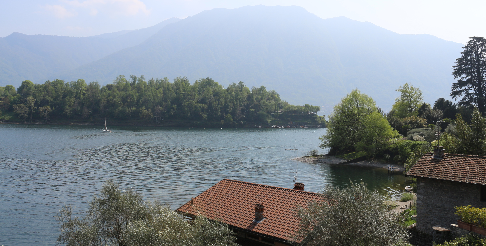
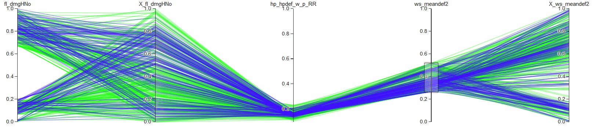

ParPlot is the tool developed by Fabian Parra and Mario Giraldo as an investigation in the MSc of Environmental and Land Planning Engineering at Politecnico di Milano, with the orientation of Prof. Andrea Castelletti and Marco Micotti. Parplot includes a tutorial and video tutorials to help the users to understand and recognize all the functionalities that Parplot has available. Parplot was design to support the negotiations processes necessary to solve multiobjective environmental problems that are described or defined by many dymensions/indicators. The way that parplots supports this processes y by givin a graphical visualization of the information, and allowing an interaction with it, to be able to analyze and select the most feasable solution.
Parplot works as a stand-alone application capable of executing on Google Chrome. This implementation supports the following low-level features for the users:
- Asynchronous interaction between users and data: different users can access and analyze the same dataset without interfering with each other.
The technical requirements for the tool are not very demanding, it suffices to have a web browser with the basic support for the web stack (Google Chrome). It uses the following freeware open-source frameworks:
- JavaScript: To work with JavaScript is a clever idea because it is a global well-known programming language that can be considered the language of the web. There are many free libraries, functions and objects that can be used for any developer.
- jQuery: It is a free library of JavaScript that makes easier to work with html documents by events and the possibility of data transfer.
-d3.js: A library that produces interactive data visualizations full based in JavaScript functions and integrated in HTML. This was the principal li- brary used for the design of ParPlot.
-Apache: A well-known web server, needed to run the tool in a web envi- ronment.
